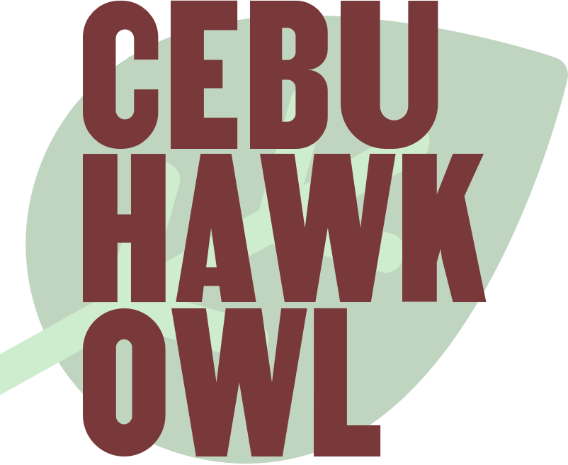

The Cebu hawk-owl or Cebu boobook (Ninox rumseyi) is a species of owl in the family Strigidae. It is endemic to the Philippines and mostly reside in areas below 1000 metres above sea level. Its natural habitats are subtropical or tropical. This species mates around February. The nests can be found in hollow trees. It is considered endagered by the IUCN Red List of Threatened Species.